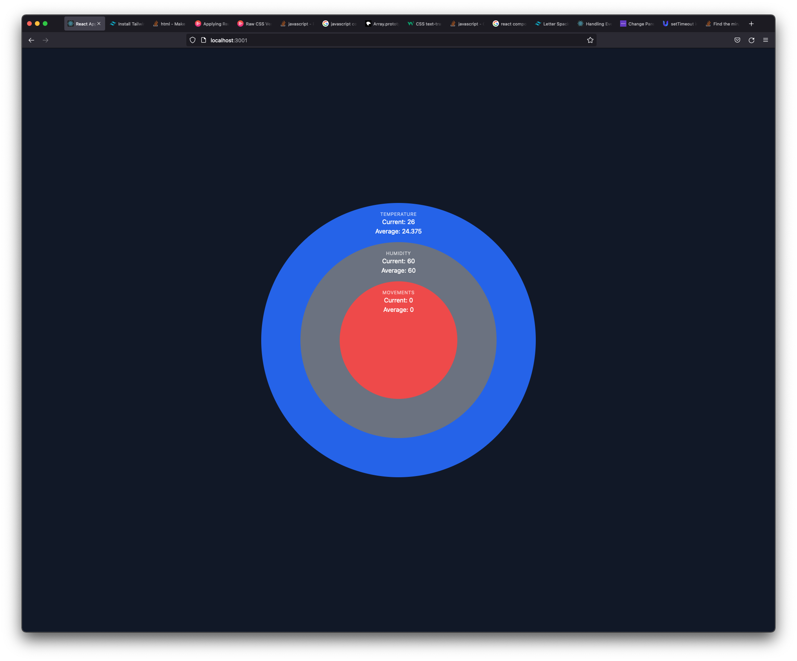

Project 3
Oct 01, 2021Studio Apartment Temperature and Humidity Visualization üå°
I chose to visualize temperature and humidity of the apartment to explore ways to visualize the status of the apartment I live in. I also wanted to explore ways to creatively visualize the sensors, instead of using graphs.
Early Developemnt
First Iteration with Graphs
Interface development
I originally thought of visualizing the temperature and humidity by clicking on multiple circles that demonstrated current and average humidity and temperature of the room. However, after consulting with the instructor, I realized that the circular representation of temperature, humidity, and the third sensor had no correlation between them. Also, graph of temperature and humidity was too obvious, so I decided to explore ways to creatively represent the data.
Final Development
Connecting Huzzah with Adafruit IO and Visualization
Using Adafruit Huzzah
The module I got to use for the sensor was to DHT11. I downloaded DHT library from Arduino IDE and tried out two examples. I went with a simpler example because all I needed was to send temperature and humidity data to Adafruit IO.
float h = dht.readHumidity();
float f = dht.readTemperature(true);
// codes ...
ioTemperature->save(f);
ioHumidity->save(h);
All I did here is to read humidity and read temperature in farenheit and save it to Adafruit IO.
Fetching Data with React Hooks
function useInterval(callback, delay) {
const savedCallback = useRef()
useEffect(() => {
savedCallback.current = callback
}, [callback])
useEffect(() => {
function tick() {
savedCallback.current()
}
if(delay !== null) {
let id = setInterval(tick, delay);
return () => clearInterval(id);
}
}, [delay]);
}
To retrieve data in real-time, I needed to set an interval I used React Hooks. Therefore, I created a function that takes a callback and a delay. I then used useInterval() to retrieve data by using the following code.
useInterval(() => {
fetch(`https://io.adafruit.com/api/v2/mattiel/feeds/${focus}/data?limit=24`)
.then(response => response.json())
.then((data) => {
setData(data);
})
.catch((error) => {
console.error(error);
});
}, delay)
Using asynchronous function to rectrieve data was necessary because React would throw and error if there was no data avaialble. Using the useInterval(), I was able to fetch data every 6 seconds. I also used template literals to fetch data based on the state focus, which I will explain on my decision on coming up with focus.
Visualization of data
I wanted to visualize temperature with a blog, with changing color based on temperature. For humidity I also wanted to show waves of particles in the background to show how humid the room is.
Problems Encountered
There were several problems encountered when trying to implement the desired functionality. First, using React to use p5.js was not straightforward, so I had to use Library to make it easier.
Implementing P5.js with React
Using react-p5, I was able to use P5 with React. There were caveats where I have to put p5. in front of every p5 functions and constants.
import React from "react";
import Sketch from "react-p5";
let x = 50;
let y = 50;
export default (props) => {
const setup = (p5, canvasParentRef) => {
// use parent to render the canvas in this ref
// (without that p5 will render the canvas outside of your component)
p5.createCanvas(500, 500).parent(canvasParentRef);
};
const draw = (p5) => {
p5.background(0);
p5.ellipse(x, y, 70, 70);
// NOTE: Do not use setState in the draw function or in functions that are executed
// in the draw function...
// please use normal variables or class properties for these purposes
x++;
};
return <Sketch setup={setup} draw={draw} />;
}
Understanding reference from Open Processing
I first had to translate the code into React P5 compatible code.
And connect the latest data point to represent the temperature of the room.
Reference
import React from "react";
import Sketch from "react-p5";
let kMax; // maximal value for the parameter "k" of the blobs
let step = 0.01; // difference in time between two consecutive blobs
let n = 100; // total number of blobs
let radius = 0; // radius of the base circle
let inter = 0.05; // difference of base radii of two consecutive blobs
let maxNoise = 500; // maximal value for the parameter "noisiness" for the blobs
const Canvas = ({temperature, humidity}) => {
const setup = (p5, canvasParentRef) => {
// use parent to render the canvas in this ref
// (without that p5 will render the canvas outside of your component)
p5.createCanvas(p5.windowWidth, p5.windowHeight).parent(canvasParentRef);
p5.colorMode(p5.HSB, 1);
p5.angleMode(p5.DEGREES);
kMax = p5.random(0.6, 1.0);
p5.noFill();
p5.noStroke();
};
const draw = (p5) => {
p5.background(0, 0, 0, 1);
const blob = (size, xCenter, yCenter, k, t, noisiness) => {
p5.beginShape();
let angleStep = 360 / 10;
for (let theta = 0; theta <= 360 + 2 * angleStep; theta += angleStep) {
let r1, r2;
r1 = p5.cos(theta)+1;
r2 = p5.sin(theta)+1; // +1 because it has to be positive for the function noise
let r = size + p5.noise(k * r1, k * r2, t) * noisiness;
let x = xCenter + r * p5.cos(theta);
let y = yCenter + r * p5.sin(theta);
p5.curveVertex(x, y);
}
p5.endShape();
}
if(temperature !== 0) {
let t = p5.frameCount/100;
for (let i = n; i > 0; i--) {
let alpha = 1 - (i / n);
let h = alpha / 5 + p5.map(temperature, 122, 32, 0, 0.75);
// h = alpha / 5 + .75
p5.fill(h % 1, 1, 1, alpha);
let size = radius + i * inter;
let k = kMax * p5.sqrt(i/n);
let noisiness = maxNoise * (i / n);
blob(size, p5.width/2, p5.height/2, k, t - i * step, noisiness);
}
}
};
const windowResized = (p5) => {
p5.resizeCanvas(p5.windowWidth, p5.windowHeight);
}
return (
<Sketch
setup={setup}
draw={draw}
windowResized={windowResized}
temperature={temperature}
/>
)
};
export default Canvas;
From this code, notice I mapped out the colors based on the temperature as an input.
let h = alpha / 5 + p5.map(temperature, 122, 32, 0, 0.75);Attempt to translate humidity visualization
For visualizing the humidity, I tried to use the same approach as temperature. The code was written in Java, I had to take some time to translate it into React P5 compatible code. Reference
import React from "react";
import Sketch from "react-p5";
let particles = [];
let humidityAlpha;
const Humidity = ({ humidity }) => {
const setup = (p5, canvasParentRef) => {
p5.createCanvas(360, 360).parent(canvasParentRef);
class Particle {
constructor(xIn, yIn, cIn) {
this.posX = xIn;
this.posY = yIn;
this.c = cIn;
this.incr = 0;
this.theta = 0;
}
}
const setParticles = () => {
for(let i = 0; i < 6000; i++) {
const x = p5.random(p5.width);
const y = p5.random(p5.height);
// const adj = map(y, 0, height, 255, 0);
const c = p5.color(255, 255, 255, 100);
particles[i] = new Particle(x, y, c);
}
}
p5.background(0);
p5.noStroke();
setParticles();
};
const draw = (p5) => {
p5.frameRate(80);
humidityAlpha = p5.map(humidity, 0, 100, 5, 35);
humidityAlpha = p5.map(p5.mouseX, 0, p5.width, 5, 35);
p5.fill(0, humidityAlpha);
p5.rect(0, 0, p5.width, p5.height);
p5.loadPixels();
particles.forEach(p => {
// p.render();
p.incr += .008
p.theta = p5.noise(p.posX * .006, p.posY * .004, p.incr) * p5.TWO_PI
p.posX += 2 * p5.cos(p.theta)
p.posY += 2 * p5.sin(p.theta)
if (p.posX > 0 && p.posX < p5.width && p.posY > 0 && p.posY < p5.height) {
p5.pixels[parseInt(p.posX) + parseInt(p.posY) * p5.width] = p.c
}
if (p.posX < 0)
p.posX = p5.width
if (p.posX > p5.width)
p.posX = 0
if (p.posY < 0)
p.posY = p5.height
if (p.posY > p5.height)
p.posY = 0
})
p5.updatePixels();
};
const windowResized = (p5) => {
p5.resizeCanvas(p5.windowWidth, p5.windowHeight);
}
return (
<Sketch
setup={setup}
draw={draw}
windowResized={windowResized}
humidity={humidity}
className="absolute right-8 bottom-8 border border-gray-800 z-10"
/>
)
};
export default Humidity;
While translation of code seems to have no problem, After many attempts, I couldn't make it work well with the temperature visualization.
Final product
For now, I have just integrated the same visualization with the humidity too.
Next steps
Since I wasn't able to get the integration of humidity working, I'd like to be able to show both visualization on the same page.